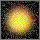

Unloaded
Image icon
Unloaded
Image icon
Use the Display Preferences to:
Access the Display Preferences by selecting
When &browser.name; is started, and when you click the Home button, your &browser.name; Home Page is displayed. To change this home page, type a new address in the Home Page Address field.
By default, your Home Page is the first page that &browser.name; displays when it starts. For performance reasons, you can choose to have &browser.name; display a blank page at startup by choosing Blank Page as the Browser Starts At option. &browser.name; will still display the Home Page whenever you click the Home button.
Show Toolbar Buttons As allows you to customize the content of the toolbar buttons. By default, the buttons contain both images and text, but you can choose to have them only display one or the other if you prefer to have smaller buttons.
The Screen Layout options allow you to customize the location of the buttons, Address field, and status bar.
By default, the Status Bar appears in the footer. You can choose to move the Status Bar to the header, or not display it at all.
Deselect the Play GIF Animations option if you want to disable &browser.name; from playing GIF animations on displayed pages in order to improve loading and scrolling performance, or if you find the animation of a particular image annoying.
Animated GIF images are images that change their appearance in a continuous cycle.
For example, this is an animated GIF image: 
The Play GIF Animations setting will only affect animations on pages (such as the animated image above). The animation in the upper right corner of the browser that indicates when a page is being loaded is not affected by this setting.
Use the Confirm on Exit option to specify whether
you would like &browser.name; to display a confirmation notice when you choose
Deselect the Automatically Load Images
option if you don't want to automatically load all images on pages when they
are loaded. Choose this option to improve the loading time of pages with a
lot of images, or pages with images you're not interested in seeing.
When Automatically Load Images is not selected, you'll see the following icon in place of every unloaded image:
The size of the panel containing this icon shows how large the image will be when it's loaded. Click the icon when you want to load the image.
If the author of the page specified alternative text for the unloaded image (using the ALT tag), that text will be displayed next to the Unloaded Image icon. This can help you identify whether you want to load the image.
If Automatically Load Images is not selected and you'd like to load all the images on the current page, select the Automatically Load Images option, click OK, and reload the page. The images will not be loaded until the page is reloaded.
Note that you may see the Unloaded Image icon if &browser.name; times out when loading an image, even if the Automatically Load Images option is selected. Click the Unloaded Image icon to restart image loading.
Deselect the Automatically Load Java Applets
option if you don't want &browser.name; to automatically
load all applets on a page as it loads the page. You might choose this option
to improve the loading time of a page with a lot of applets, or a page
with an applet you're not interested in seeing.
When Automatically Load Java Applets is not selected, you'll see the following icon in place of an unloaded applet:
The size of the panel containing the icon shows how large the applet will be when it's loaded. Click the icon when you want to load the applet. Watch the message area to see the progress of the applet loading.
If the Automatically Load Java Applets option is not selected and you'd like to load all the applets on the current page at once, select the Automatically Load Java Applets option, click OK, and then reload the page.
Use the Show Personal Bookmarks in Bookmarks Menu option to control
the contents of the Bookmarks menu.
By default, all the bookmarks in your Personal Bookmarks list are listed
at the end of the menu, (after Go to Bookmark). If this makes your Bookmarks
menu too long or cumbersome, you can deselect the Show Personal Bookmarks
in Bookmarks Menu option. The Bookmarks menu then will only contain the top
four standard menu items, ending with Go to Bookmark. You can still access
your Personal Bookmarks list by using the Edit Bookmarks window, or using the
File Bookmarks and Go to Bookmarks submenus.
| Table of Contents | INDEX |
Copyright © Sun Microsystems, Inc.
 Unloaded
Applet icon
Unloaded
Applet icon